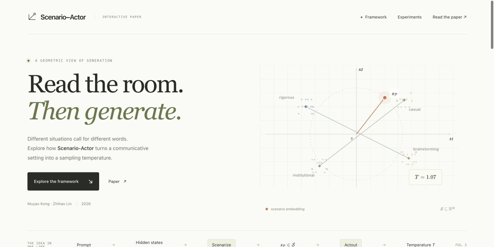
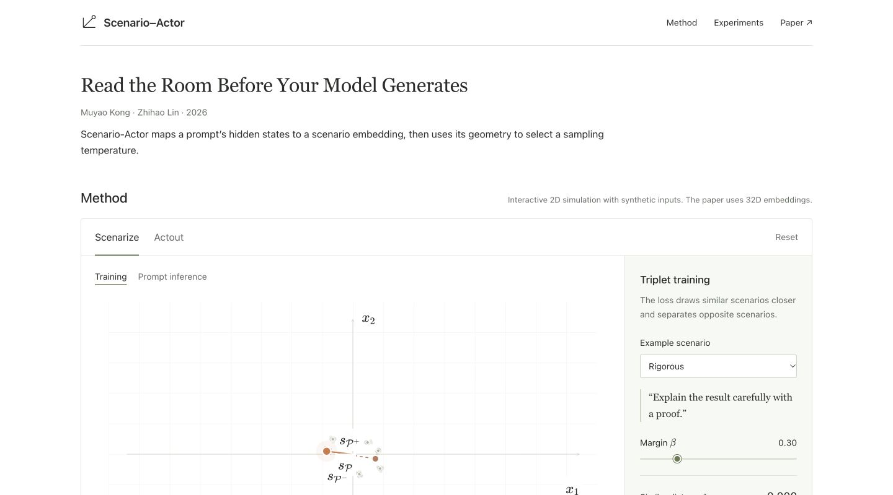

A · Previous version
Open demo A ↗
Illustrated introduction, overview strip, and separate result summaries. Preserved for comparison.
Simulation · ExperimentsBoth demos are interactive. A preserves the previous version; B includes the latest typography, formula, and wording changes.

Illustrated introduction, overview strip, and separate result summaries. Preserved for comparison.
Simulation · Experiments
Original logo, larger body text and formulas, explicit vector inner products, and fewer controls.
Simulation · ExperimentsThe main website currently shows B. The existing QR code and public address remain unchanged.